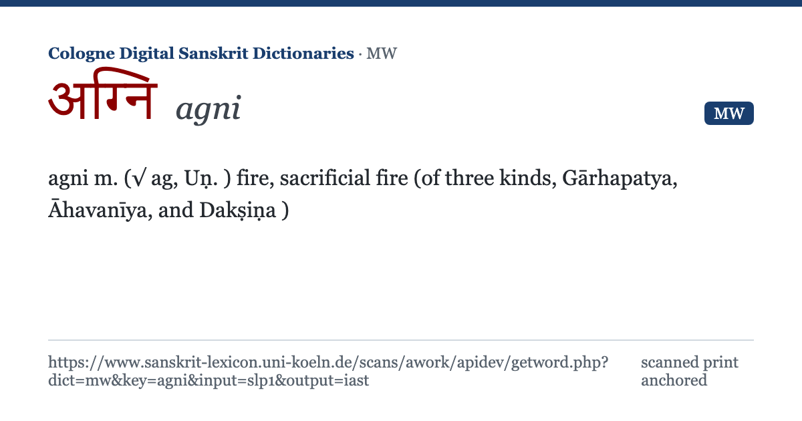

agni m. (√ ag, Uṇ.) fire, sacrificial fire (of three kinds, Gārhapatya, Āhavanīya, and Dakṣiṇa)

11:03 ✓✓
og:title = headword, og:description = first sense, og:image + twitter:card = the 1200×630 card from og/ (ships in the same pull). Telegram renders the large card because twitter:card=summary_large_image rides next to og:image.